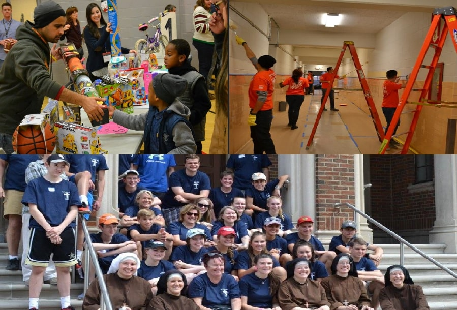

Responsibilities include serving food at community events, assisting in event operations including but not limited to set up and tear down. Events include senior citizen lunches, community dinners, Christmas gift giveaways and weekly food pantry operations.
